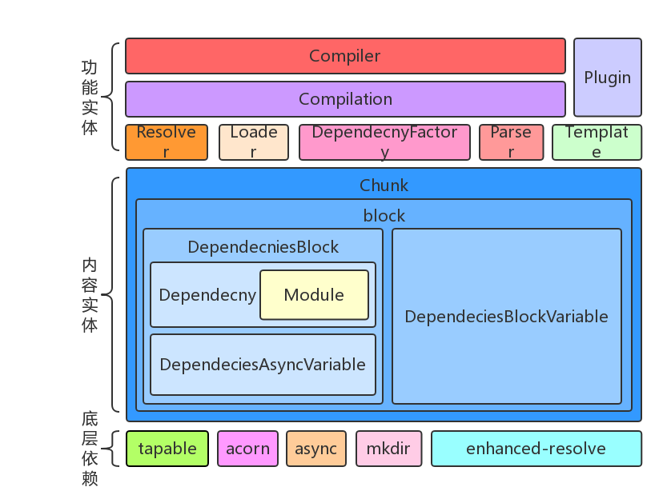

1. 初始化项目 #
doskey /history
mkdir webpack-source
cd webpack-source
npm init -y
cnpm i webpack webpack-cli -D
cnpm i lodash -S
npx webpack
2.配置文件 #
2.1 src\index.js #
src\index.js
import _ from 'lodash';
console.log(_.isArray([]));
2.2 webpack.config.js #
webpack.config.js
const path = require('path');
module.exports = {
mode:'development',
entry: './src/index.js',
output: {
path:path.join(__dirname,'dist'),
filename: 'bundle.js'
}
};
3.可执行命令 #
3.1 直接调用 #
- 可以直接打开
node_modules\webpack-cli\bin\cli.js文件 - 然后直接打开调试窗口，然后点击启动编译就可以了
3.2 如何生成调试文件 #
- 打开工程目录，点击调试按钮，再点击小齿轮的配置按钮系统就会生成launch.json配置文件
- 修改好了以后直接点击F5就可以启动调试
.vscode\launch.json
{
"version": "0.2.0",
"configurations": [
{
"type": "node",
"request": "launch",
"name": "debug webpack",
"cwd": "${workspaceFolder}",
"program": "${workspaceFolder}/node_modules/_webpack-cli@3.3.10@webpack-cli/bin/cli.js"
}
]
}
3.2 webpack.cmd #
webpack-source\node_modules.bin\webpack.cmd
%~dp0是批处理文件所在的盘符:+路径(%~dp0 C:\vipdata\vipproject\webpack-source\node_modules.bin)SETLOCAL主要针对临时环境变量，不会影响到系统的变量环境设置，应与endlocal联用PATHEXT当在一个相同的目录结构下，有相同的多个主文件名，不同的文件后缀名时，系统会根据PATHEXT中的后缀名，选择其中顺序最靠前的那一个@IF EXIST "%~dp0\node.exe" (//如果当前盘符的根目录下存在node.exe,用当前的node执行 "%~dp0\node.exe" "%~dp0\..\_webpack@4.39.3@webpack\bin\webpack.js" %* ) ELSE (//如果当前的盘符没有node.exe @SETLOCAL @SET PATHEXT=%PATHEXT:;.JS;=;% node "%~dp0\..\_webpack@4.39.3@webpack\bin\webpack.js" %* )
3.3 webpack.js #
node_modules\webpack\bin\webpack.js
const path = require("path");
const pkgPath = require.resolve(`${installedClis[0].package}/package.json`);
// eslint-disable-next-line node/no-missing-require
const pkg = require(pkgPath);
// eslint-disable-next-line node/no-missing-require
require(path.resolve(
path.dirname(pkgPath),
pkg.bin[installedClis[0].binName]
));
const path = require("path");
const pkgPath = require.resolve(`webpack-cli/package.json`);
const pkg = require(pkgPath);
require(path.resolve(path.dirname(pkgPath),pkg.bin['webpack-cli']));
- npx webpack就相当于用node执行cli.js脚本
npx webpack = node ./node_modules/webpack-cli/bin/cli.js
3.4 阅读思路 #
- 先折叠无关的分支的逻辑，只看主体流程代码
- 寻找关键路径，根据变量名和方法名猜测意图，然后通过阅读源码来验证想法
- debugger关键路径，理解整个执行过程
3.5 重要文件 #
- Webpack 类似于一个公司
- Compiler 类似于公司的董事长，只把握战略方向
- Compilation 就像各个事业部的总监,负责各个部门的管理
- ModuleFactory 就像各个具体部门了,负责具体工作产出产品
4.启动编译 #
- Compiler和Compilation都继承自Tapable
- Compiler是每个Webpack配置对应一个Compiler对象，记录着Webpack的生命周期
- 在构建的过程中，每次构建都会产生一个Compilation,Compilation是构建周期的产物
- Compiler模块是Webpack最核心的模块
- 每次执行构建的时候，都会先实例化一个 Compiler对象，然后调用它的
run方法来开启一次完整的编译
| 说明 | 代码 |
|---|---|
| 1.读取配置文件 | requireConfig |
| 2.创建compiler | webpack(options) |
| 3.开始编译 | compiler.run |
node debug.js
debug.js
const webpack = require("webpack");
const config = require('./webpack.config.js');//1.读取配置文件
const compiler = webpack(config);
function compilerCallback(err, stats) {
const statsString = stats.toString();
console.log(statsString);
}
compiler.run((err,stats)=>{
compilerCallback(err, stats);
});
5.钩子 #
5.1 Compiler #
- L106
entryOption: new SyncBailHook(["context", "entry"])
};
+ Object.keys(this.hooks).forEach(hookName => {
+ const hook = this.hooks[hookName];
+ if (hook.tap) {
+ hook.tap('flow', () => {
+ console.log(`|compiler|${hookName}|${Object.getPrototypeOf(hook).constructor.name}|${hook._args}|`);
+ });
+ }
+ });
5.2 Compilation #
- L437
afterOptimizeExtractedChunks: new SyncHook(["chunks"])
};
+ Object.keys(this.hooks).forEach(hookName => {
+ const hook = this.hooks[hookName];
+ if (hook.tap) {
+ hook.tap('flow', () => {
+ console.log(`|compilation|${hookName}|${Object.getPrototypeOf(hook).constructor.name}|${hook._args}|`);
+ });
+ }
+ });
this._pluginCompat.tap("Compilation", options => {
|compiler|environment|SyncHook||
|compiler|afterEnvironment|SyncHook||
|compiler|entryOption|SyncBailHook|context,entry|
|compiler|afterPlugins|SyncHook|compiler|
|compiler|afterResolvers|SyncHook|compiler|
|compiler|beforeRun|AsyncSeriesHook|compiler|
|compiler|run|AsyncSeriesHook|compiler|
|compiler|normalModuleFactory|SyncHook|normalModuleFactory|
|compiler|contextModuleFactory|SyncHook|contextModulefactory|
|compiler|beforeCompile|AsyncSeriesHook|params|
|compiler|compile|SyncHook|params|
|compiler|thisCompilation|SyncHook|compilation,params|
|compiler|compilation|SyncHook|compilation,params|
|compiler|make|AsyncParallelHook|compilation|
|compilation|addEntry|SyncHook|entry,name|
|compilation|buildModule|SyncHook|module|
|compilation|normalModuleLoader|SyncHook|loaderContext,module|
|compilation|succeedModule|SyncHook|module|
|compilation|buildModule|SyncHook|module|
|compilation|normalModuleLoader|SyncHook|loaderContext,module|
|compilation|succeedModule|SyncHook|module|
|compilation|buildModule|SyncHook|module|
|compilation|normalModuleLoader|SyncHook|loaderContext,module|
|compilation|buildModule|SyncHook|module|
|compilation|normalModuleLoader|SyncHook|loaderContext,module|
|compilation|succeedModule|SyncHook|module|
|compilation|succeedModule|SyncHook|module|
|compilation|succeedEntry|SyncHook|entry,name,module|
|compilation|finishModules|AsyncSeriesHook|modules|
|compilation|seal|SyncHook||
|compilation|optimizeDependenciesBasic|SyncBailHook|modules|
|compilation|optimizeDependencies|SyncBailHook|modules|
|compilation|optimizeDependenciesAdvanced|SyncBailHook|modules|
|compilation|afterOptimizeDependencies|SyncHook|modules|
|compilation|beforeChunks|SyncHook||
|compilation|dependencyReference|SyncWaterfallHook|dependencyReference,d
|compilation|dependencyReference|SyncWaterfallHook|dependencyReference,d
|compilation|dependencyReference|SyncWaterfallHook|dependencyReference,d
|compilation|dependencyReference|SyncWaterfallHook|dependencyReference,d
|compilation|log|SyncBailHook|origin,logEntry|
|compilation|log|SyncBailHook|origin,logEntry|
|compilation|afterChunks|SyncHook|chunks|
|compilation|optimize|SyncHook||
|compilation|optimizeModulesBasic|SyncBailHook|modules|
|compilation|optimizeModules|SyncBailHook|modules|
|compilation|optimizeModulesAdvanced|SyncBailHook|modules|
|compilation|afterOptimizeModules|SyncHook|modules|
|compilation|optimizeChunksBasic|SyncBailHook|chunks,chunkGroups|
|compilation|optimizeChunks|SyncBailHook|chunks,chunkGroups|
|compilation|optimizeChunksAdvanced|SyncBailHook|chunks,chunkGroups|
|compilation|afterOptimizeChunks|SyncHook|chunks,chunkGroups|
|compilation|optimizeTree|AsyncSeriesHook|chunks,modules|
|compilation|afterOptimizeTree|SyncHook|chunks,modules|
|compilation|optimizeChunkModulesBasic|SyncBailHook|chunks,modules|
|compilation|optimizeChunkModules|SyncBailHook|chunks,modules|
|compilation|optimizeChunkModulesAdvanced|SyncBailHook|chunks,modules|
|compilation|afterOptimizeChunkModules|SyncHook|chunks,modules|
|compilation|shouldRecord|SyncBailHook||
|compilation|reviveModules|SyncHook|modules,records|
|compilation|optimizeModuleOrder|SyncHook|modules|
|compilation|advancedOptimizeModuleOrder|SyncHook|modules|
|compilation|beforeModuleIds|SyncHook|modules|
|compilation|moduleIds|SyncHook|modules|
|compilation|optimizeModuleIds|SyncHook|modules|
|compilation|afterOptimizeModuleIds|SyncHook|modules|
|compilation|reviveChunks|SyncHook|chunks,records|
|compilation|optimizeChunkOrder|SyncHook|chunks|
|compilation|beforeChunkIds|SyncHook|chunks|
|compilation|optimizeChunkIds|SyncHook|chunks|
|compilation|afterOptimizeChunkIds|SyncHook|chunks|
|compilation|recordModules|SyncHook|modules,records|
|compilation|recordChunks|SyncHook|chunks,records|
|compilation|beforeHash|SyncHook||
|compilation|chunkHash|SyncHook|chunk,chunkHash|
|compilation|contentHash|SyncHook|chunk|
|compilation|afterHash|SyncHook||
|compilation|recordHash|SyncHook|records|
|compilation|beforeModuleAssets|SyncHook||
|compilation|shouldGenerateChunkAssets|SyncBailHook||
|compilation|beforeChunkAssets|SyncHook||
|compilation|chunkAsset|SyncHook|chunk,filename|
|compilation|additionalChunkAssets|SyncHook|chunks|
|compilation|record|SyncHook|compilation,records|
|compilation|additionalAssets|AsyncSeriesHook||
|compilation|optimizeChunkAssets|AsyncSeriesHook|chunks|
|compilation|afterOptimizeChunkAssets|SyncHook|chunks|
|compilation|optimizeAssets|AsyncSeriesHook|assets|
|compilation|afterOptimizeAssets|SyncHook|assets|
|compilation|needAdditionalSeal|SyncBailHook||
|compilation|afterSeal|AsyncSeriesHook||
|compiler|afterCompile|AsyncSeriesHook|compilation|
|compiler|shouldEmit|SyncBailHook|compilation|
|compiler|emit|AsyncSeriesHook|compilation|
|compiler|assetEmitted|AsyncSeriesHook|file,content|
|compiler|afterEmit|AsyncSeriesHook|compilation|
|compilation|needAdditionalPass|SyncBailHook||
|compiler|done|AsyncSeriesHook|stats|
| 类型 | 事件名称 | 类型 | 参数 | 说明 | 发射事件代码 | 对应插件 |
|---|---|---|---|---|---|---|
| compiler | environment | SyncHook | 空 | 准备编译环境，webpack plugins配置初始化完成之后 | webpack.js#L55 | NodeEnvironmentPlugin |
| compiler | afterEnvironment | SyncHook | 空 | 编译环境准备好之后 | webpack.js#L56 | |
| compiler | entryOption | SyncBailHook | context,entry | 在 webpack 中的 entry 配置处理过之后 | WebpackOptionsApply.js#L291 | EntryOptionPlugin,SingleEntryPlugin |
| compiler | afterPlugins | SyncHook | compiler | 初始化完内置插件之后 | WebpackOptionsApply.js#L506 | |
| compiler | afterResolvers | SyncHook | compiler | resolver 完成之后 | WebpackOptionsApply.js#L541 | |
| compiler | beforeRun | AsyncSeriesHook | compiler | 开始正式编译之前 | Compiler.js#L312 | |
| compiler | run | AsyncSeriesHook | compiler | 开始编译之后，读取 records 之前；监听模式触发watch-run | Compiler.js#L315 | |
| compiler | normalModuleFactory | SyncHook | normalModuleFactory | NormalModuleFactory 创建之后 | Compiler.js#L631 | |
| compiler | contextModuleFactory | SyncHook | contextModulefactory | ContextModuleFactory 创建之后 | Compiler.js#L631 | |
| compiler | beforeCompile | AsyncSeriesHook | params | compilation 实例化需要的参数创建完毕之后 | Compiler.js#L652 | |
| compiler | compile | SyncHook | params | 一次 compilation 编译创建之前 | Compiler.js#L652 | |
| compiler | thisCompilation | SyncHook | compilation,params | 触发 compilation 事件之前执行 | Compiler.js#L620 | |
| compiler | compilation | SyncHook | compilation,params | compilation创建成功之后 | Compiler.js#L620 | |
| compiler | make | AsyncParallelHook | compilation | 完成编译之前 | Compiler.js#L659 | SingleEntryPlugin |
| compilation | addEntry | SyncHook | entry,name | 增加入口 | Compilation.js#L1106 | |
| compilation | buildModule | SyncHook | module | 在模块构建开始之前触发 | Compilation.js#L701 | |
| compilation | normalModuleLoader | SyncHook | loaderContext,module | 普通模块 loader，真正（一个接一个地）加载模块图（graph）中所有模块的函数 | NormalModule.js#L233 | |
| compilation | succeedModule | SyncHook | module | 模块构建成功时执行 | Compilation.js#744 | |
| compilation | succeedEntry | SyncHook | entry,name,module | Compilation.js#L1147 | ||
| compilation | finishModules | AsyncSeriesHook | modules | 所有模块都完成构建 | Compilation.js#L1216 | |
| compilation | seal | SyncHook | 编译（compilation）停止接收新模块时触发 | Compilation.js#L1246 | ||
| compilation | optimizeDependenciesBasic | SyncBailHook | modules | 基础依赖优化开始时触发 | Compilation.js#L1249 | |
| compilation | optimizeDependencies | SyncBailHook | modules | 依赖优化开始时触发 | Compilation.js#L1250 | |
| compilation | optimizeDependenciesAdvanced | SyncBailHook | modules | 高级依赖优化开始时触发 | Compilation.js#L1251 | |
| compilation | afterOptimizeDependencies | SyncHook | modules | 优化结束 | Compilation.js#L1255 | |
| compilation | beforeChunks | SyncHook | 开始生成代码块 | Compilation.js#L1257 | ||
| compilation | dependencyReference | SyncWaterfallHook | dependencyReference,dependency,module | 依赖引用 | Compilation.js#L1565 | |
| compilation | log | SyncBailHook | origin,logEntry | 打印日志 | Compilation.js#L542 | |
| compilation | afterChunks | SyncHook | chunks | 代码块生成之后 | Compilation.js#L1282 | |
| compilation | optimize | SyncHook | 优化阶段开始时触发 | Compilation.js#L1284 | ||
| compilation | optimizeModulesBasic | SyncBailHook | modules | 基础模块的优化 | Compilation.js#L1284 | |
| compilation | optimizeModules | SyncBailHook | modules | 模块的优化 | Compilation.js#L1284 | |
| compilation | optimizeModulesAdvanced | SyncBailHook | modules | 高级模块的优化 | Compilation.js#L1284 | |
| compilation | afterOptimizeModules | SyncHook | modules | 模块优化结束时触发 | Compilation.js#L1293 | |
| compilation | optimizeChunksBasic | SyncBailHook | chunks,chunkGroups | 基础chunk优化 | Compilation.js#L1296 | |
| compilation | optimizeChunks | SyncBailHook | chunks,chunkGroups | 优化 chunks | Compilation.js#L1297 | |
| compilation | optimizeChunksAdvanced | SyncBailHook | chunks,chunkGroups | 高级chunk优化 | Compilation.js#L1298 | |
| compilation | afterOptimizeChunks | SyncHook | chunks,chunkGroups | chunk 优化完成之后触发 | Compilation.js#L1302 | |
| compilation | optimizeTree | AsyncSeriesHook | chunks,modules | 异步优化依赖树 | Compilation.js#L1304 | |
| compilation | afterOptimizeTree | SyncHook | chunks,modules | 异步优化依赖树完成时 | Compilation.js#L1309 | |
| compilation | optimizeChunkModulesBasic | SyncBailHook | chunks,modules | 基础优化单个chunk中的 modules 开始 | Compilation.js#L1312 | |
| compilation | optimizeChunkModules | SyncBailHook | chunks,modules | 优化单个chunk中的 modules 开始 | Compilation.js#L1313 | |
| compilation | optimizeChunkModulesAdvanced | SyncBailHook | chunks,modules | 高级优化单个chunk中的 modules 开始 | Compilation.js#L1314 | |
| compilation | afterOptimizeChunkModules | SyncHook | chunks,modules | 优化单个chunk中的 modules结束后 | Compilation.js#L1318 | |
| compilation | shouldRecord | SyncBailHook | 是否应该记录 | Compilation.js#L1320 | ||
| compilation | reviveModules | SyncHook | modules,records | 从 records 中恢复模块信息 | Compilation.js#L1322 | |
| compilation | optimizeModuleOrder | SyncHook | modules | 将模块从最重要的到最不重要的进行排序 | Compilation.js#L1323 | |
| compilation | advancedOptimizeModuleOrder | SyncHook | modules | 高级将模块从最重要的到最不重要的进行排序 | Compilation.js#L1324 | |
| compilation | beforeModuleIds | SyncHook | modules | 处理 modulesId 之前 | Compilation.js#L1325 | |
| compilation | moduleIds | SyncHook | modules | 处理 modulesId | Compilation.js#L1326 | |
| compilation | optimizeModuleIds | SyncHook | modules | 优化 modulesId | Compilation.js#L1328 | |
| compilation | afterOptimizeModuleIds | SyncHook | modules | 优化 modulesId之后 | Compilation.js#L1329 | |
| compilation | reviveChunks | SyncHook | chunks,records | 从 records 中恢复 chunk 信息 | Compilation.js#L1333 | |
| compilation | optimizeChunkOrder | SyncHook | chunks | 将 chunk 从最重要的到最不重要的进行排序 | Compilation.js#L1334 | |
| compilation | beforeChunkIds | SyncHook | chunks | chunk id 优化之前触发 | Compilation.js#L1335 | |
| compilation | optimizeChunkIds | SyncHook | chunks | chunk id 优化开始触发 | Compilation.js#L1337 | |
| compilation | afterOptimizeChunkIds | SyncHook | chunks | chunk id 优化结束触发 | Compilation.js#L1338 | |
| compilation | recordModules | SyncHook | modules,records | 将模块信息存储到 records | Compilation.js#L1343 | |
| compilation | recordChunks | SyncHook | chunks,records | 将 chunk 信息存储到 records | Compilation.js#L1344 | |
| compilation | beforeHash | SyncHook | 在编译被哈希（hashed）之前 | Compilation.js#L1347 | ||
| compilation | chunkHash | SyncHook | chunk,chunkHash | 生成chunkHash | Compilation.js#L1937 | |
| compilation | contentHash | SyncHook | chunk | 生成contentHash | Compilation.js#L1941 | |
| compilation | afterHash | SyncHook | 在编译被哈希（hashed）之后 | Compilation.js#L1349 | ||
| compilation | recordHash | SyncHook | records | 记录hash | Compilation.js#L1352 | |
| compilation | beforeModuleAssets | SyncHook | 在创建模块的资源之前 | Compilation.js#L1355 | ||
| compilation | shouldGenerateChunkAssets | SyncBailHook | 是否要生成chunk资源 | Compilation.js#L1357 | ||
| compilation | beforeChunkAssets | SyncHook | 在创建 chunk 资源（asset）之前 | Compilation.js#L1358 | ||
| compilation | chunkAsset | SyncHook | chunk,filename | 一个 chunk 中的一个资源被添加到编译中 | Compilation.js#L2019 | |
| compilation | additionalChunkAssets | SyncHook | chunks | additionalChunkAssets | Compilation.js#L1361 | |
| compilation | record | SyncHook | compilation,records | 将 compilation 相关信息存储到 records 中 | Compilation.js#L1364 | |
| compilation | additionalAssets | AsyncSeriesHook | 为编译（compilation）创建附加资源（asset） | Compilation.js#L1367 | ||
| compilation | optimizeChunkAssets | AsyncSeriesHook | compilation | 优化所有 chunk 资源（asset） | Compilation.js#L1343 | |
| compilation | afterOptimizeChunkAssets | SyncHook | chunks | chunk 资源（asset）已经被优化 | Compilation.js#L1371 | |
| compilation | optimizeAssets | AsyncSeriesHook | assets | 优化存储在 compilation.assets 中的所有资源（asset） | Compilation.js#L1371 | |
| compilation | afterOptimizeAssets | SyncHook | assets | 优化compilation.assets 中的所有资源（asset）之后 | Compilation.js#L1380 | |
| compilation | needAdditionalSeal | SyncBailHook | 是否需要额外的seal | Compilation.js#L1381 | ||
| compilation | afterSeal | AsyncSeriesHook | seal之后 | Compilation.js#L1383 | ||
| compiler | afterCompile | AsyncSeriesHook | compilation | 完成编译和封存（seal）编译产出之后 | Compiler.js#L668 | |
| compiler | shouldEmit | SyncBailHook | compilation | 发布构建后资源之前触发，回调必须返回true/false，true则继续 | Compiler.js#L267 | |
| compiler | emit | AsyncSeriesHook | compilation | 生成资源到 output 目录之前 | Compiler.js#L481 | |
| compiler | assetEmitted | AsyncSeriesHook | file,content | assetEmitted | Compiler.js#L437 | |
| compiler | afterEmit | AsyncSeriesHook | compilation | 生成资源到 output 目录之后 | Compiler.js#L472 | |
| compilation | needAdditionalPass | SyncBailHook | 是否需要额外的 | Compiler.js#L281 | ||
| compiler | done | AsyncSeriesHook | stats | compilation完成之后 | Compiler.js#L304 |
5.Stats 对象 #
- 在 Webpack 的回调函数中会得到stats对象
- 这个对象实际来自于
Compilation.getStats()，返回的是主要含有modules、chunks和assets三个属性值的对象。 - Stats对象本质上来自于lib/Stats.js的类实例
| 字段 | 含义 |
|---|---|
| modules | 记录了所有解析后的模块 |
| chunks | 记录了所有chunk |
| assets | 记录了所有要生成的文件 |
npx webpack --profile --json > stats.json
{
"errors": [],// 错误字符串 (error string) 的数组
"warnings": [],//警告字符串 (warning string) 的数组
"version": "4.39.3",// 用来编译的 webpack 的版本
"hash": "3e945ec6b2c56d0b010e",//编译使用的 hash
"time": 66, // 编译耗时 (ms)
"builtAt": 1567225465347,//编译的时间
"publicPath": "",//资源访问路径
"outputPath": "C:\\vipdata\\vipproject\\webpack-source\\dist",//webpack输出目录
"assetsByChunkName": {//用作映射的 chunk 的名称
"lazy": "lazy.bundle.js",//chunk的名字叫lazy,lazy.bundle.js
"main": "bundle.js"//chunk的名字叫main,打包出来了bundle.js
},
"assets": [//asset 对象 (asset objects) 的数组
{
"name": "bundle.js",//文件名
"size": 9043,//大小
"chunks": [//包含的代码块
"main"
],
"chunkNames": [//包含的代码块名称
"main"
],
"emitted": true//是否要生成
},
{
"name": "lazy.bundle.js", // 输出的文件名
"size": 336,// 文件的大小
"chunks": [ // 这个 asset 包含的 chunk 的 id
"lazy"
],
"chunkNames": [// 这个 asset 包含的 chunk
"lazy"
],
"emitted": true // 表示这个 asset 是否会让它输出到 output 目录
}
],
"filteredAssets": 0,
"entrypoints": {
"main": {
"chunks": [
"main"
],
"assets": [
"bundle.js"
],
"children": {},
"childAssets": {}
}
},
"namedChunkGroups": {
"main": {
"chunks": [
"main"
],
"assets": [
"bundle.js"
],
"children": {},
"childAssets": {}
},
"lazy": {
"chunks": [
"lazy"
],
"assets": [
"lazy.bundle.js"
],
"children": {},
"childAssets": {}
}
},
"chunks": [ //chunk 对象 (chunk objects) 的数组
{
"id": "lazy", // 这个 chunk 的id
"rendered": true,// 表示这个 chunk 是否会参与进编译
"initial": false,
"entry": false,// 表示这个 chunk 是否包含 webpack 的运行时
"size": 24,//预估的模块大小
"names": [// 包含在这个 chunk 内的 chunk 的名字的数组
"lazy"
],
"files": [
"lazy.bundle.js"
],
"hash": "d08a8b502d30324f81e1",
"siblings": [],
"parents": [// 父 chunk 的 ids
"main"
],
"children": [],
"childrenByOrder": {},
"modules": [
{
"id": "./src/lazy.js",
"identifier": "C:\\vipdata\\vipproject\\webpack-source\\src\\lazy.js",
"name": "./src/lazy.js",
"index": 2,
"index2": 2,
"size": 24,
"cacheable": true,
"built": true,
"optional": false,
"prefetched": false,
"chunks": [
"lazy"
],
"issuer": "C:\\vipdata\\vipproject\\webpack-source\\src\\index.js",
"issuerId": "./src/index.js",
"issuerName": "./src/index.js",
"issuerPath": [
{
"id": "./src/index.js",
"identifier": "C:\\vipdata\\vipproject\\webpack-source\\src\\index.js",
"name": "./src/index.js",
"profile": {
"factory": 18,
"building": 14
}
}
],
"profile": {
"factory": 4,
"building": 2
},
"failed": false,
"errors": 0,
"warnings": 0,
"assets": [],
"reasons": [// 生成 assets 的原因
{
"moduleId": "./src/index.js",//模块的ID
"moduleIdentifier": "C:\\vipdata\\vipproject\\webpack-source\\src\\index.js",//唯一标识
"module": "./src/index.js",//模块
"moduleName": "./src/index.js",//模块名称
"type": "import()",//类型
"userRequest": "./lazy",//用户请求方式
"loc": "2:0-46"//在父模块中的位置
}
],
"providedExports": null,
"optimizationBailout": [],
"depth": 1,
"source": "module.exports = 'lazy';"
}
],
"filteredModules": 0,
"origins": [
{
"moduleId": "./src/index.js",// 模块的ID
"module": "C:\\vipdata\\vipproject\\webpack-source\\src\\index.js",// 模块的位置
"moduleIdentifier": "C:\\vipdata\\vipproject\\webpack-source\\src\\index.js",// 模块的地址
"moduleName": "./src/index.js",//模块的相对地址
"loc": "2:0-46",
"request": "./lazy",
"reasons": [] // 具体是哪行生成了这个chunk
}
]
},
{
"id": "main",
"rendered": true,
"initial": true,
"entry": true,
"size": 162,
"names": [
"main"
],
"files": [
"bundle.js"
],
"hash": "263cadc0459e8470151b",
"siblings": [],
"parents": [],
"children": [// 自己引用哪些chunk
"lazy"
],
"childrenByOrder": {}, // 引用的顺序
"modules": [
{
"id": "./src/hello.js",
"identifier": "C:\\vipdata\\vipproject\\webpack-source\\src\\hello.js",
"name": "./src/hello.js",
"index": 1,
"index2": 0,
"size": 25,
"cacheable": true,
"built": true,
"optional": false,
"prefetched": false,
"chunks": [
"main"
],
"issuer": "C:\\vipdata\\vipproject\\webpack-source\\src\\index.js",
"issuerId": "./src/index.js",
"issuerName": "./src/index.js",
"issuerPath": [
{
"id": "./src/index.js",
"identifier": "C:\\vipdata\\vipproject\\webpack-source\\src\\index.js",
"name": "./src/index.js",
"profile": {
"factory": 18,
"building": 14
}
}
],
"profile": {
"factory": 4,
"building": 2
},
"failed": false,
"errors": 0,
"warnings": 0,
"assets": [],
"reasons": [
{
"moduleId": "./src/index.js",
"moduleIdentifier": "C:\\vipdata\\vipproject\\webpack-source\\src\\index.js",
"module": "./src/index.js",
"moduleName": "./src/index.js",
"type": "cjs require",
"userRequest": "./hello",
"loc": "1:12-30"
}
],
"providedExports": null,
"optimizationBailout": [],
"depth": 1,
"source": "module.exports = 'hello';"
},
{
"id": "./src/index.js",
"identifier": "C:\\vipdata\\vipproject\\webpack-source\\src\\index.js",
"name": "./src/index.js",
"index": 0,
"index2": 1,
"size": 137,
"cacheable": true,
"built": true,
"optional": false,
"prefetched": false,
"chunks": [
"main"
],
"issuer": null,
"issuerId": null,
"issuerName": null,
"issuerPath": null,
"profile": {
"factory": 18,
"building": 14
},
"failed": false,
"errors": 0,
"warnings": 0,
"assets": [],
"reasons": [
{
"moduleId": null,
"moduleIdentifier": null,
"module": null,
"moduleName": null,
"type": "single entry",
"userRequest": "./src/index.js",
"loc": "main"
}
],
"providedExports": null,
"optimizationBailout": [],
"depth": 0,
"source": "let hello = require('./hello');\r\nimport(/* webpackChunkName: \"lazy\" */'./lazy').then(result=>{\r\n console.log(hello,resut.default)\r\n});"
}
],
"filteredModules": 0,
"origins": [
{
"module": "",
"moduleIdentifier": "",
"moduleName": "",
"loc": "main",
"request": "./src/index.js",
"reasons": []
}
]
}
],
"modules": [// 模块对象 (module objects) 的数组
{
"id": "./src/hello.js",//模块ID
"identifier": "C:\\vipdata\\vipproject\\webpack-source\\src\\hello.js",//webpack内部使用的唯一的标识
"name": "./src/hello.js",// 实际文件的地址
"index": 1,//索引
"index2": 0,//索引
"size": 25,// 预估模块的大小 (byte)
"cacheable": true,// 表示这个模块是否会被缓存
"built": true,// 表示这个模块会参与 Loaders , 解析, 并被编译
"optional": false,// 每一个对这个模块的请求都会包裹在 `try... catch` 内
"prefetched": false,// 表示这个模块是否会被 prefetched
"chunks": [//此模块在哪个代码块内
"main"
],
"issuer": "C:\\vipdata\\vipproject\\webpack-source\\src\\index.js",//使用者唯一标识
"issuerId": "./src/index.js",//使用者ID
"issuerName": "./src/index.js",//使用者名称
"issuerPath": [//使用者路径
{
"id": "./src/index.js",
"identifier": "C:\\vipdata\\vipproject\\webpack-source\\src\\index.js",
"name": "./src/index.js",
"profile": { //这个模块特有的编译时间数据(ms)
"factory": 18,// 解决依赖的时间
"building": 14 // 载入和解析的时间
}
}
],
"profile": {
"factory": 4,// 解决依赖的时间
"building": 2// 载入和解析的时间
},
"failed": false,//是否失败
"errors": 0,// 处理模块时错误的数量
"warnings": 0,// 处理模块时警告的数量
"assets": [],//在哪个资源内
"reasons": [
{
"moduleId": "./src/index.js",// 模块的 ID
"moduleIdentifier": "C:\\vipdata\\vipproject\\webpack-source\\src\\index.js",// 模块的地址
"module": "./src/index.js",// 所基于模块的相对地址 context
"moduleName": "./src/index.js",
"type": "cjs require",// 使用的请求的种类 (require或import)
"userRequest": "./hello",// 用来 `import` 或者 `require` 的源字符串
"loc": "1:12-30" // 导致这个被加入依赖图标的代码行数
}
],
"providedExports": null,//提供的导出对象
"optimizationBailout": [],//失败时的优化
"depth": 1,//模块深度
"source": "module.exports = 'hello';"// 字符串化的输入
},
{
"id": "./src/index.js",
"identifier": "C:\\vipdata\\vipproject\\webpack-source\\src\\index.js",
"name": "./src/index.js",
"index": 0,
"index2": 1,
"size": 137,
"cacheable": true,
"built": true,
"optional": false,
"prefetched": false,
"chunks": [
"main"
],
"issuer": null,
"issuerId": null,
"issuerName": null,
"issuerPath": null,
"profile": {
"factory": 18,
"building": 14
},
"failed": false,
"errors": 0,
"warnings": 0,
"assets": [],
"reasons": [
{
"moduleId": null,
"moduleIdentifier": null,
"module": null,
"moduleName": null,
"type": "single entry",
"userRequest": "./src/index.js",
"loc": "main"
}
],
"providedExports": null,
"optimizationBailout": [],
"depth": 0,
"source": "let hello = require('./hello');\r\nimport(/* webpackChunkName: \"lazy\" */'./lazy').then(result=>{\r\n console.log(hello,resut.default)\r\n});"
},
{
"id": "./src/lazy.js",
"identifier": "C:\\vipdata\\vipproject\\webpack-source\\src\\lazy.js",
"name": "./src/lazy.js",
"index": 2,
"index2": 2,
"size": 24,
"cacheable": true,
"built": true,
"optional": false,
"prefetched": false,
"chunks": [
"lazy"
],
"issuer": "C:\\vipdata\\vipproject\\webpack-source\\src\\index.js",
"issuerId": "./src/index.js",
"issuerName": "./src/index.js",
"issuerPath": [
{
"id": "./src/index.js",
"identifier": "C:\\vipdata\\vipproject\\webpack-source\\src\\index.js",
"name": "./src/index.js",
"profile": {
"factory": 18,
"building": 14
}
}
],
"profile": {
"factory": 4,
"building": 2
},
"failed": false,
"errors": 0,
"warnings": 0,
"assets": [],
"reasons": [
{
"moduleId": "./src/index.js",
"moduleIdentifier": "C:\\vipdata\\vipproject\\webpack-source\\src\\index.js",
"module": "./src/index.js",
"moduleName": "./src/index.js",
"type": "import()",
"userRequest": "./lazy",
"loc": "2:0-46"
}
],
"providedExports": null,
"optimizationBailout": [],
"depth": 1,
"source": "module.exports = 'lazy';"
}
],
"filteredModules": 0,
"logging": {
"webpack.buildChunkGraph.visitModules": {
"entries": [],
"filteredEntries": 5,
"debug": false
}
},
"children": []
}
6. 主要工作流程 #
- Webpack 的运行流程是一个串行的过程，从启动到结束会依次执行以下流程：
初始化参数：从配置文件和 Shell 语句中读取与合并参数，得出最终的参数；- 开始编译：用上一步得到的参数初始化 Compiler 对象，加载所有配置的插件，执行对象的run方法开始执行编译； 确定入口：根据配置中的 entry 找出所有的入口文件
- 编译模块：从入口文件出发，调用所有配置的 Loader 对模块进行编译，再找出该模块依赖的模块，再递归本步骤直到所有入口依赖的文件都经过了本步骤的处理；
- 完成模块编译：在经过第4步使用 Loader 翻译完所有模块后，得到了每个模块被翻译后的最终内容以及它们之间的依赖关系；
- 输出资源：根据入口和模块之间的依赖关系，组装成一个个包含多个模块的 Chunk，再把每个 Chunk 转换成一个单独的文件加入到输出列表，这步是可以修改输出内容的最后机会；
- 输出完成：在确定好输出内容后，根据配置确定输出的路径和文件名，把文件内容写入到文件系统。
- 在以上过程中，Webpack 会在特定的时间点广播出特定的事件，插件在监听到感兴趣的事件后会执行特定的逻辑，并且插件可以调用 Webpack 提供的 API 改变 Webpack 的运行结果。

6.1 初始化阶段 #
| 事件名 | 解释 | 代码位置 |
|---|---|---|
| 读取命令行参数 | 从命令行中读取用户输入的参数 | require("./convert-argv")(argv) |
| 实例化 Compiler | 1.用上一步得到的参数初始化 Compiler 实例 2.Compiler 负责文件监听和启动编译 3.Compiler 实例中包含了完整的 Webpack 配置，全局只有一个 Compiler 实例。 |
compiler = webpack(options); |
| 加载插件 | 1.依次调用插件的 apply 方法，让插件可以监听后续的所有事件节点。 同时给插件传入 compiler 实例的引用，以方便插件通过 compiler 调用 Webpack 提供的 API。 |
plugin.apply(compiler) |
| 处理入口 | 读取配置的 Entrys，为每个 Entry 实例化一个对应的 EntryPlugin，为后面该 Entry 的递归解析工作做准备 | new EntryOptionPlugin().apply(compiler) new SingleEntryPlugin(context, item, name) compiler.hooks.make.tapAsync |
6.2 编译阶段 #
6.3 结束阶段 #
| 事件名 | 解释 | 代码位置 |
|---|---|---|
| seal | 封装 | compilation.seal seal(callback) |
| addChunk | 生成资源 | addChunk(name) |
| createChunkAssets | 创建资源 | this.createChunkAssets() |
| getRenderManifest | 获得要渲染的描述文件 | getRenderManifest(options) |
| render | 渲染源码 | source = fileManifest.render(); |
| afterCompile | 编译结束 | this.hooks.afterCompile |
| shouldEmit | 所有需要输出的文件已经生成好，询问插件哪些文件需要输出，哪些不需要。 | this.hooks.shouldEmit |
| emit | 确定好要输出哪些文件后，执行文件输出，可以在这里获取和修改输出内容。 | this.emitAssets(compilation this.hooks.emit.callAsync const emitFiles = err this.outputFileSystem.writeFile |
| this.emitRecords | 写入记录 | this.emitRecords |
| done | 全部完成 | this.hooks.done.callAsync |
